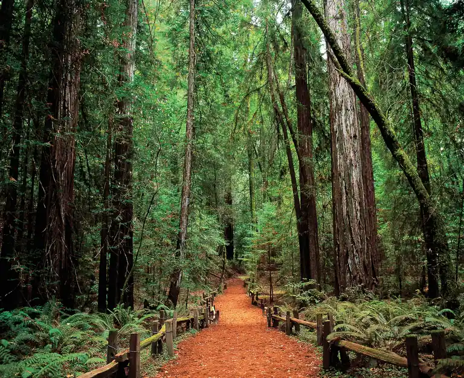
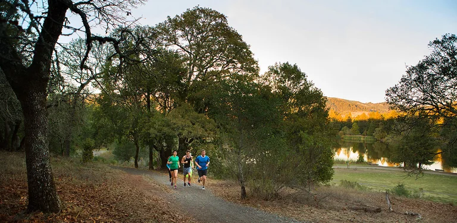

Winter is green season around Santa Rosa. The rain that keeps you indoors one day leaves the redwoods dripping and the hills bright the next. The catch is mud: dirt trails get soft after a storm, and walking on them then does lasting damage. The answer is to pick the right path for the conditions. Here are a redwood walk worth the drive and a handful of paved, rain-ready trails close to town, with the fees and rules the parks themselves publish.

Armstrong Redwoods: old-growth trees on a flat trail
Armstrong Redwoods State Natural Reserve is about 35 minutes west of downtown Santa Rosa, three miles north of Guerneville on Armstrong Woods Road. From Santa Rosa, take the River Road exit and head west. California State Parks notes that in winter temperatures drop but stay moderate, and that the rain nourishes the grove. Bring a sweater and a rain jacket.
The easiest way in is the Pioneer Nature Trail, about a mile and a half round trip, mostly flat and ADA accessible. The Parson Jones Tree is an easy 0.1-mile walk from the park entrance, and the park suggests easy loops of about 1 and 1.7 miles from the entrance for a longer walk.
- Hours: 8 am to one hour after official sunset.
- Day use: $10 per vehicle, or $9 per vehicle with a passenger 62 or older. Fees are due whether or not the kiosk is staffed; if no one is there, self-register.
- Visitor center: open 11 am to 3 pm daily.
- Dogs: leashed at all times and allowed only on the main paved road and in the developed picnic areas. Dogs are not allowed on any dirt trail or dirt road.
- Current closures: as of the park's November 14, 2026 update, all trails in Armstrong Redwoods and Austin Creek are open except the East Ridge Connector Trail from the Volunteer Office parking area. Equestrian trails are closed, and camping at Austin Creek is closed until further notice because of the Wallbridge Fire.
The reserve is at 17000 Armstrong Woods Road, Guerneville. Drones are not allowed.
Rain-ready trails close to town
Sonoma County Regional Parks keeps a list of paved paths that hold up in wet weather, and several are close to Santa Rosa. The county's advice is simple: after a storm, choose pavement, because wet dirt trails are more vulnerable to long-term damage.

Spring Lake Loop Trail, Santa Rosa. A 2.3-mile easy loop around Spring Lake, on the east side of the city. The lake was built as a flood control reservoir in the 1960s, so the county warns that the trail may close because of flooding after heavy rain. There are two entrances, each with a large parking lot.
Santa Rosa Creek Trail, west Santa Rosa. About 4 miles out and back on a paved path that follows the creek for 2.14 miles between Willowside Road and Fulton Road. Limited free parking is on the shoulder of Willowside Road.
Valley of the Moon Trail, Sonoma Valley Regional Park. A 1.2-mile trail near Glen Ellen, about 2 miles out and back, rated easy.
Ridge Trail, Helen Putnam Regional Park. A paved section near Petaluma, about 2.4 miles out and back from the Chileno Valley Road parking lot. It is rated moderate and is not ADA accessible.
Beach Access Path, Gualala Point Regional Park. On the far northern coast, a 0.4-mile paved path to the beach, about a mile out and back. Waves and tides can run high in winter, so check coastal conditions first.
On these county trails, leashed dogs are welcome; pick up and pack out after them. A parking fee applies at the regional parks, and parking is free for Regional Parks members.
How to tell if a trail is too muddy
The county's test is easy to remember. If you are leaving deep footprints or tire ruts, or mud is sticking to your shoes or tires, it is best to turn back and pick a paved path instead. After storms, check each park's web page for current conditions and temporary closures before you drive out.
Good to know
- Armstrong Redwoods: 8 am to one hour after sunset, $10 per vehicle ($9 with a passenger 62+).
- Pioneer Nature Trail: about 1.5 miles round trip, flat and ADA accessible.
- No dogs on Armstrong's dirt trails; leashed dogs are welcome on the county's paved trails.
- Spring Lake Loop: 2.3 miles, may close for flooding.
- Deep footprints or mud on your shoes means turn back.
Pair it with an indoor afternoon
Winter weather can turn quickly. If the morning walk gets rained out, our rainy day guide covers the museums and the ice rink in town, and our Santa Rosa itinerary has more ideas for redwood and coast days.
A warm base between walks
After a damp morning under the redwoods, it helps to come back to a real downtown. Hotel E sits in a historic building on Old Courthouse Square, with continental breakfast before you set out, an evening happy hour when you return and valet parking. Art House Santa Rosa is a few blocks away on 7th Street. Either one puts the redwoods and the lake trails within an easy drive.
Plan your stay downtown
Browse hotels, restaurants, wineries and attractions, all in one place.
Open the directory